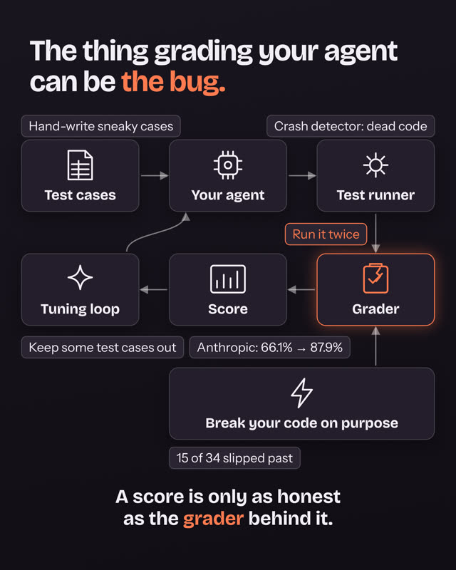
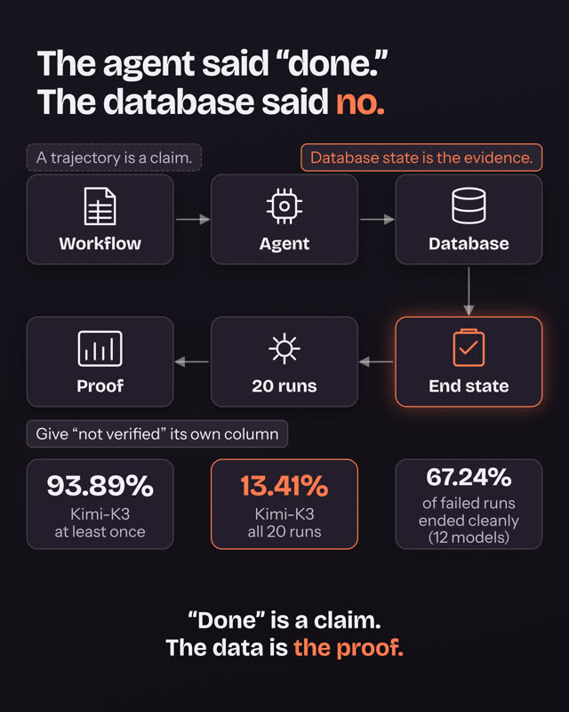
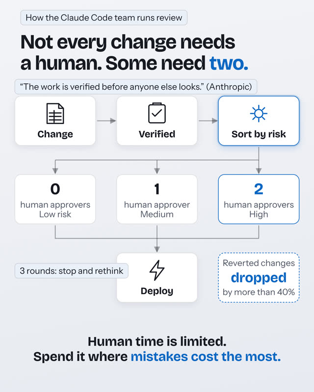
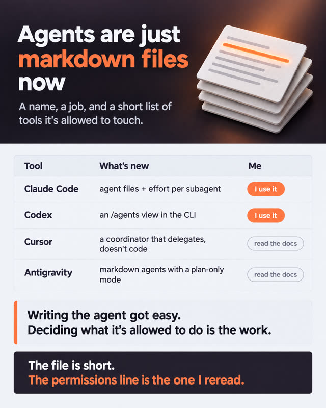
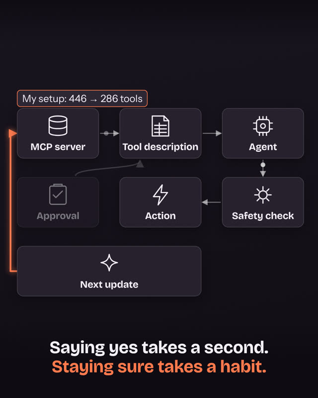
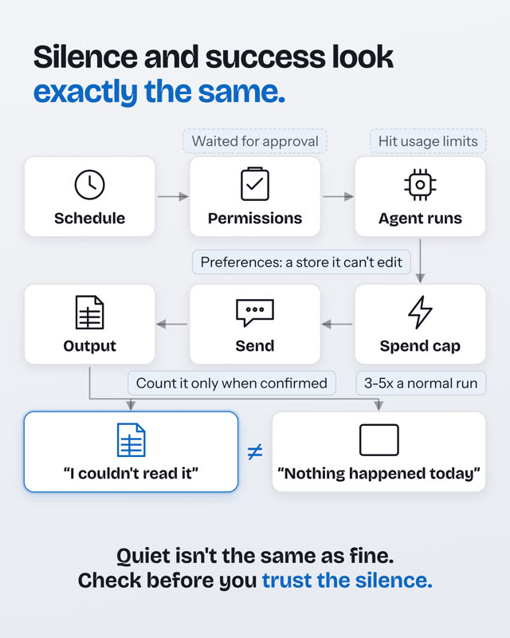
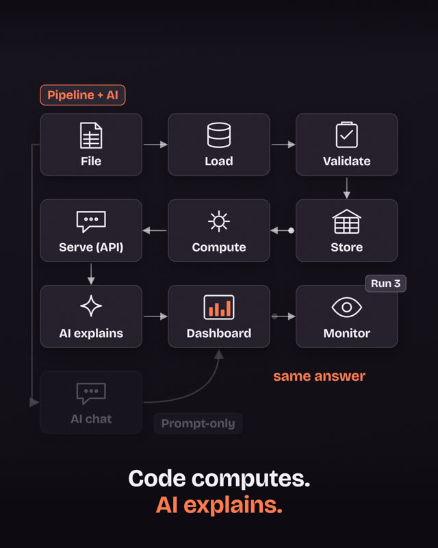
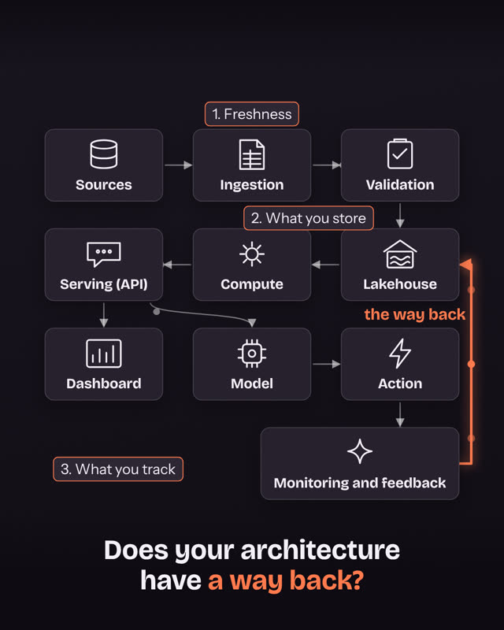

NEW Evals & testing
Your eval score might be lying: the grader can be the bug
A score jumped from 66.1% to 87.9%, and part of that came from fixing broken graders. How to check the checker, with a checklist to copy.
Detailed breakdowns of what's new in AI and data architecture: agents, guardrails, pipelines and the tools people actually use. Every post has a real end-to-end diagram you can click through, and links to the original sources so you can check it yourself.

A score jumped from 66.1% to 87.9%, and part of that came from fixing broken graders. How to check the checker, with a checklist to copy.

Microsoft's ThinkingBox grades agents on the records they leave behind. 93.89% solved at least once, 13.41% every time.

How the Claude Code team sorts every change by risk: 0, 1 or 2 human approvers, verified before anyone looks.

What changed in Claude Code, Codex, Cursor and Antigravity this fall, and the one line in an agent file that deserves real thought.

An approval is a moment. A tool is a stream. The Deadbugz MCP case and the defenses that keep up with it.

When an agent runs while you sleep, a failed run can look exactly like a quiet day. Anthropic's playbook for unattended runs.

Upload a spreadsheet to a chat and the totals can change between runs. Here's the pipeline that keeps the numbers the same, with the AI still doing the part it's great at.

A dashboard and an AI model can read the same data. They need different architecture. The difference is one arrow, and it changes three things.
Nothing in this topic yet. The next one is on the way.